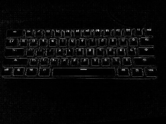
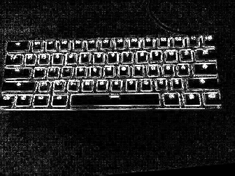

on
[EX-04] Filtro Laplaciano do Gaussiano
Exercício 4.1
Objetivo
Utilizando o programa exemplos/filtroespacial.cpp como referência, implemente um programa laplgauss.cpp. O programa deverá acrescentar mais uma funcionalidade ao exemplo fornecido, permitindo que seja calculado o laplaciano do gaussiano das imagens capturadas. Compare o resultado desse filtro com a simples aplicação do filtro laplaciano.
Implementação
O filtro Laplaciano do Gaussiano pode ser obtido utilizando a seguinte máscara 5x5:
| 0 | 0 | -1 | 0 | 0 |
|---|---|---|---|---|
| 0 | -1 | -2 | -1 | 0 |
| -1 | -2 | 16 | -2 | -1 |
| 0 | -1 | -2 | -1 | 0 |
| 0 | 0 | -1 | 0 | 0 |
Então, primeiramente criamos uma nova matriz contendo os valores da máscara, chamada gaussLaplacian,
laplgauss.cpp
1
2
3
4
5
6
7
8
9
10
11
12
13
[...]
float media[] = {0.1111, 0.1111, 0.1111, 0.1111, 0.1111,
0.1111, 0.1111, 0.1111, 0.1111};
float gauss[] = {0.0625, 0.125, 0.0625, 0.125, 0.25,
0.125, 0.0625, 0.125, 0.0625};
float horizontal[] = {-1, 0, 1, -2, 0, 2, -1, 0, 1};
float vertical[] = {-1, -2, -1, 0, 0, 0, 1, 2, 1};
float laplacian[] = {0, -1, 0, -1, 4, -1, 0, -1, 0};
float boost[] = {0, -1, 0, -1, 5.2, -1, 0, -1, 0};
float gaussLaplacian[] = {0, 0, -1, 0, 0, 0, -1, -2, -1,
0, -1, -2, 16, -2, -1, 0, -1, -2,
-1, 0, 0, 0, -1, 0, 0};
[...]
E adicionamos uma nova ação ao pressionar uma tecla, nesse caso, pressionando a tecla o. Nessa ação, é atribuida à variável mask uma nova matriz baseada em gaussLaplacian, de largura = 5 e altura = 5.
laplgauss.cpp
1
2
3
4
5
6
7
8
9
10
11
12
13
14
15
[...]
case 'l':
mask = cv::Mat(3, 3, CV_32F, laplacian);
printmask(mask);
break;
case 'b':
mask = cv::Mat(3, 3, CV_32F, boost);
break;
case 'o':
mask = cv::Mat(5, 5, CV_32F, gaussLaplacian);
printmask(mask);
break;
default:
break;
[...]
Resultados
Após executar o programa, obtemos duas janelas, onde em uma está a imagem original e na outra, o resultado dos filtros, conforme as imagens a seguir.
Imagem original
Ao pressionar a tecla l, o resultado do filtro Laplaciano é:
 Imagem filtrada utilizando o Laplaciano
E ao pressionar a tecla o, o resultado do filtro Laplaciano do Gaussiano é:
 Imagem filtrada utilizando o Laplaciano do Gaussiano